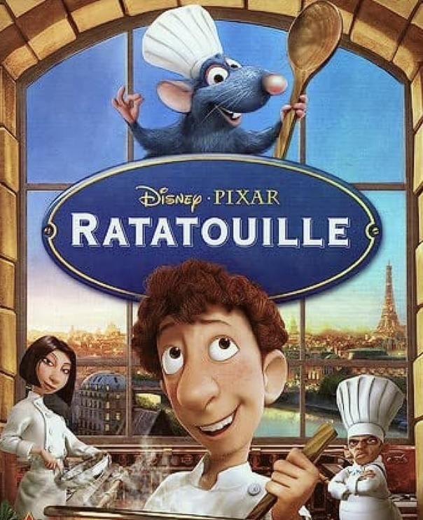
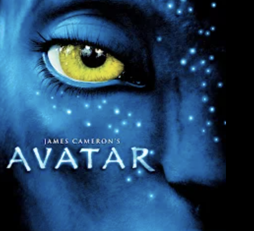

Ratatouille is my favorite movies because it captures the essense of following one's passion against all odds. The story of Remy, a rat with a dream to become a renowned chef, is both inspiring and heartwarming, reminding me to persue my own aspirations.
Avatar is my favorite movie because it transports me to a mesmerizing and visually stunning world like no other. The lush and immersive landscapes of Pandora, coupled with groundbreaking visual effects, create an unforgettable cinematic experience. The film's underlying message of environmentalism and the connection between humans and nature resonates deeply with me, reminding me of the importance of preserving our planet.
Forrest Gump is my favorite movie because it beautifully captures the journey of an ordinary man living an extraordinary life. The film's iconic character, portrayed brilliantly by Tom Hanks, teaches us valuable lessons about kindness, resilience, and the power of perseverance.